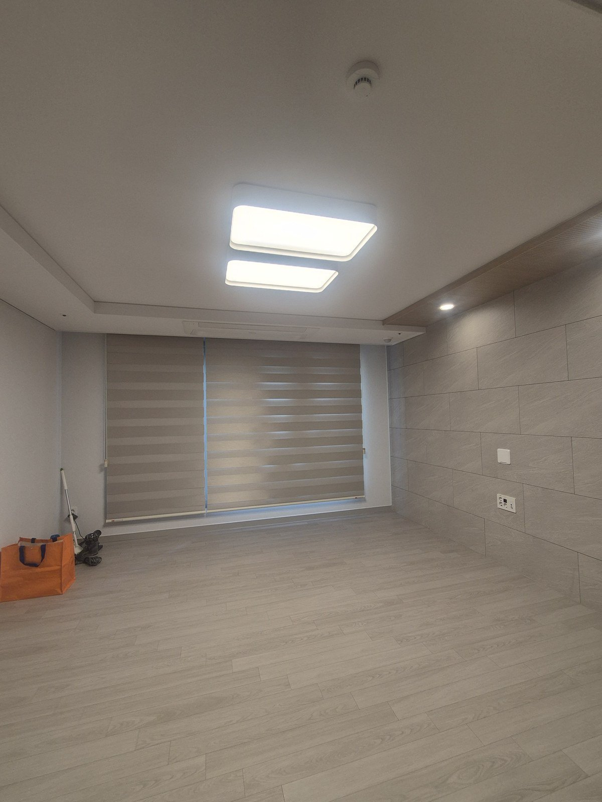
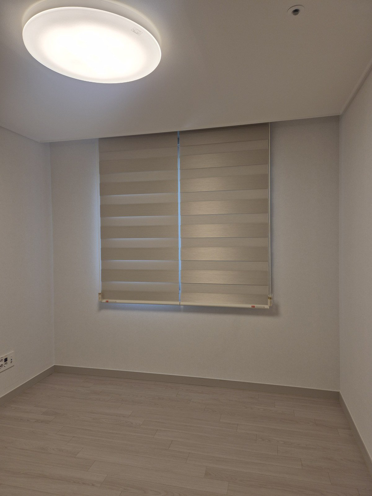
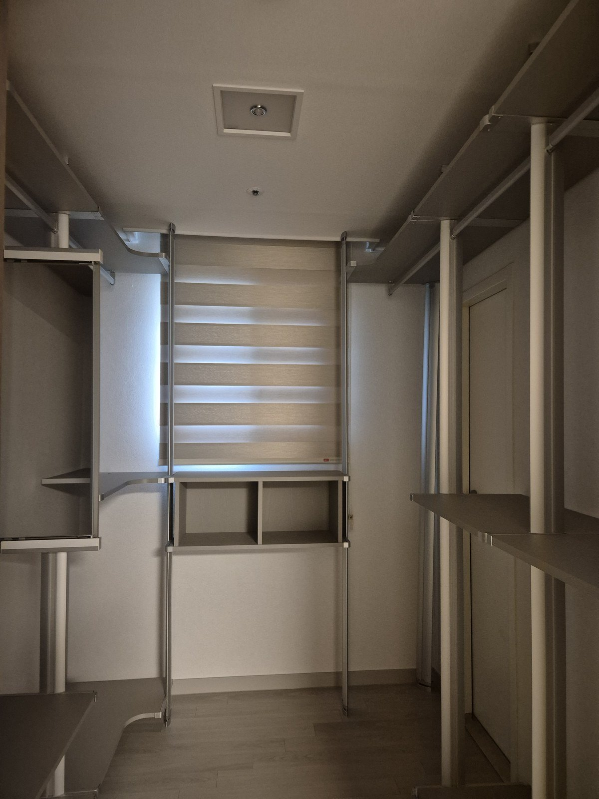

2026년 7월 27일 시공
경주 자이아파트 집 전체
암막 콤비블라인드 시공후기 (거실·안방·작은방·드레스룸)

경주 자이아파트 입주 전 시공 기록입니다.
창이 있는 자리가 다섯 곳이었습니다. 거실, 안방, 작은방 두 곳, 그리고 드레스룸.
고객님이 처음 하신 질문은 "방마다 다른 걸 달아야 하나요"였습니다. 결론부터 말씀드리면, 이 집은 하나로 통일하는 쪽이 맞았습니다.
안녕하세요, 경주를 포함한 경북 전 지역 커튼·블라인드 출장 시공 따솜커튼블라인드입니다.
제품은 하나로, 구조는 방마다 다르게
벽과 바닥이 이미 밝은 톤으로 잡혀 있는 신축이었습니다. 여기에 방마다 다른 색, 다른 제품을 넣으면 문을 열 때마다 창가 톤이 바뀝니다.
각 방만 따로 보면 예쁠 수 있는데, 집을 한 바퀴 돌면 시선이 계속 끊깁니다. 특히 방문을 열어두고 지내는 집은 이 차이가 큽니다.
그래서 다섯 자리 전부 같은 미색 암막 콤비블라인드로 맞췄습니다. 벽보다 반 단계만 따뜻한 톤이라 창의 윤곽은 살아나면서 벽에서 튀지 않습니다.
대신 구조는 방마다 다르게 잡았습니다. 제품을 통일했다고 다 똑같이 만드는 게 아닙니다. 여기서부터가 실측의 몫입니다.

거실 — 큰 창은 두 짝으로 나눴습니다
거실 창은 폭이 넓었습니다. 이런 창을 한 짝으로 뽑으면 원단 무게가 상당해집니다.
매일 아침저녁으로 올리고 내리는 물건인데 무거우면 결국 손이 안 갑니다. 그래서 좌우 두 짝으로 나눠 조작을 가볍게 만들었습니다.
나누면 쓸모가 하나 더 생깁니다. 한쪽만 올려서 부분 채광이 됩니다. 낮에 전체를 열기는 싫고 거실이 좀 밝았으면 할 때 창 쪽 한 짝만 반쯤 올리시면 됩니다.
안방 — 창보다 넓게 잡아 위쪽 빛샘을 막았습니다

"암막을 달았는데도 새벽에 깬다"는 말씀을 자주 듣습니다. 대부분 원단 탓이 아닙니다.
블라인드를 창틀 안쪽에 딱 맞춰 넣으면 창틀 위쪽 면과 블라인드 상단 사이에 손가락 하나 들어갈 틈이 남습니다. 여름 아침 해는 각도가 낮아서 이 틈으로 정확히 들어오고, 천장에 반사돼 방 전체를 밝힙니다.
그래서 안방은 창틀 안이 아니라 벽면 쪽으로 폭을 키워 잡았습니다. 위쪽으로도 여유를 더 줬고요. 창을 덮는 게 아니라 창이 있는 벽면을 덮는 방식입니다.
옆 틈도 같이 줄어듭니다. 완전히 없앨 수는 없지만 창틀 안에 넣었을 때와는 차이가 확실합니다.
투박해지지 않냐고 물으실 수 있는데 오히려 반대입니다. 벽면을 넓게 덮으면 창이 커 보이고 방이 정돈돼 보입니다.
작은방 두 곳 — 조작줄 방향을 문에 맞췄습니다

작은방은 폭이 넉넉하지 않았습니다. 여기에 커튼을 달면 젖혀둔 원단이 창 옆을 차지해서 방이 더 좁아 보입니다. 창틀에 붙는 콤비가 자리를 덜 먹습니다.
두 방 모두 조작줄을 문 열고 들어오면서 바로 손이 닿는 쪽으로 잡았습니다. 매일 만지는 부분이라 반대쪽에 달리면 계속 불편합니다.

실측 때 문 위치를 꼭 여쭤보는 이유입니다. 사이즈만 받아서 주문하면 이 부분이 빠집니다.
드레스룸 — 선반 프레임을 피해 브래킷을 잡았습니다

이 집에서 가장 손이 많이 간 자리입니다.
드레스룸 창을 가려야 하는 이유는 분명합니다. 직사광이 계속 들어오는 자리에 옷을 걸어두면 색이 빠집니다. 어깨선부터 시작해 앞판 위쪽으로 번지고, 짙은 남색이나 검정일수록 눈에 띄게 바랩니다. 가죽이나 니트는 색뿐 아니라 소재 자체가 상합니다.
문제는 시공 자리였습니다. 벽에 기둥을 세우고 선반을 거는 시스템 가구가 창 앞을 가로질러 지나갑니다. 창 크기만 재서 만들면 내릴 때 프레임에 부딪히거나 브래킷을 박을 자리가 안 나옵니다.
창틀 상단에서 프레임까지 남은 공간을 실측해, 그 안에 들어가는 위치로 브래킷을 잡았습니다. 그러면서도 블라인드가 창을 충분히 덮도록 폭과 높이를 다시 계산했습니다.
나중에 전동으로 바꾸실 가능성까지 생각해 브래킷 자리를 조금 여유 있게 남겨뒀습니다. 전동 모터는 봉 안쪽에 들어가는 방식이라 브래킷 규격이 수동과 다른 경우가 있는데, 처음부터 딱 맞춰 박아두면 나중에 벽에 구멍이 두 번 납니다.
낮과 밤을 나눠 쓰는 법
콤비블라인드는 슬랫 위치로 밝기를 바꿉니다. 낮에는 슬랫을 맞춰 빛을 들이고, 잘 때는 어긋나게 겹쳐서 막습니다.
창을 계속 덮은 채로 밝기만 바꿀 수 있다는 게 이 제품의 장점입니다. 롤스크린처럼 올렸다 내렸다 하지 않아도 됩니다.
한 가지만 기억하시면 됩니다. 주무실 때는 슬랫을 끝까지 겹쳐주세요. 애매하게 반쯤 겹친 상태로 두면 원단 두 겹 사이로 빛이 새어 들어옵니다. 조작줄을 끝까지 당기면 딸깍하는 지점이 옵니다.
시공 정보
지역 : 경북 경주시 자이아파트 (신축 입주 전)
공간 : 거실, 안방, 작은방 2, 드레스룸 (총 5개소)
제품 : 미색 암막 콤비블라인드
포인트 : 거실 두 짝 분할 / 안방 창보다 넓은 폭 / 작은방 조작줄 방향 / 드레스룸 선반 프레임 회피 브래킷
작업 시간 : 1일
시공일 : 2026년 7월 27일
자주 묻는 질문
Q. 집 전체를 한 가지 제품으로 통일해도 괜찮나요?
벽과 바닥 톤이 이미 잡혀 있는 집이라면 통일하는 쪽이 넓어 보입니다. 다만 방마다 쓰임이 확실히 다르면 나누는 게 맞습니다. 창을 보고 판단합니다.
Q. 콤비블라인드도 완전히 어두워지나요?
슬랫을 완전히 겹치면 원단 자체로는 빛이 통과하지 않습니다. 다만 창틀과 블라인드 사이 옆 틈으로 미세하게 들어옵니다. 완전한 암실이 필요하시면 폭을 창보다 넉넉히 잡거나 암막커튼과 이중으로 가는 방법을 안내드립니다.
Q. 암막인데 밝은 미색도 되나요?
됩니다. 암막은 원단 뒷면 차광층이 담당하고 겉면 색과는 별개입니다. 밝은 계열도 선택 폭이 넓습니다.
Q. 드레스룸에 선반이 이미 설치돼 있는데 달 수 있나요?
가능합니다. 프레임을 피해 브래킷 자리를 잡으면 됩니다. 남은 공간이 얼마인지 봐야 해서 방문 실측이 필요합니다.
Q. 입주 전에 하는 게 나은가요?
네. 빈 집일 때가 사다리와 공구를 놓기 편해서 마감이 깔끔하게 나옵니다. 이번 집도 입주 전에 하루 만에 끝냈습니다.
Q. 경주도 방문 시공 되나요?
네. 경주 전 지역은 담당 실장이 직접 방문해 창을 보고 시공합니다. 포항, 안동, 영천 등 경북 동부도 같은 담당입니다.
마무리
다섯 자리를 하루에 끝냈습니다. 시공 마치고 고객님이 하신 말씀은 "집이 정리돼 보인다"였습니다.
제품을 통일하되 구조는 방마다 다르게. 이 집에서 하려던 건 정확히 그거였습니다.
창 전체가 나오게 찍은 사진 한 장만 주시면 방문 전에 대략적인 견적을 먼저 알려드립니다.
비슷한 시공이 필요하신가요?
창 전체가 나오게 찍은 사진 한 장 주시면 방문 전에 견적을 알려드립니다.
부재 시 문자를 남겨주시면 빠르게 답변드립니다.